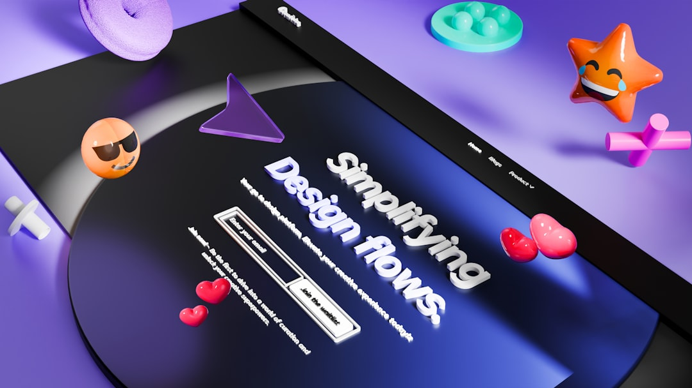

Best Website Creation publishes a free, conversion-focused website design offer for Australian businesses. The source page does not publish package tiers, a delivery timeframe, a phone number, opening hours, review score, or fixed inclusions, so a buyer should treat the next step as a scope conversation. Confirm what "free" includes, who owns the finished site, how conversion goals are defined, and what happens after launch.
For Australian businesses comparing web design services, the useful question is not only how a site looks, but whether its brief, structure and follow-up support match a real customer journey.
Web Design Services Explained
Best Website Creation describes its offer as free, conversion-focused web design for Australian businesses. That is a useful starting point, but it is not a full scope document. Before a buyer treats the offer as a complete build promise, the practical task is to ask what is included, what is optional, and what the business must supply.
A clear brief should identify the primary action the site is meant to support. For some businesses that may be an enquiry form, for others it may be a call request, appointment request, quote request or service comparison. The source page uses the phrase conversion-focused, so the brief should translate that into concrete page decisions rather than a vague preference for a modern look.
- Ask which pages are included in the free offer.
- Ask whether copy, imagery, forms, hosting setup and revisions are included.
- Ask who owns the site files, domain connection and account access after launch.
- Ask how the design will guide visitors toward the intended enquiry action.
How To Judge Conversion Fit
Conversion fit is easier to assess when the buyer separates visual taste from buyer behaviour. A homepage can look polished while still hiding the next step, burying service proof, or asking too much of a visitor before they understand the offer. A better review starts with the likely first question a visitor brings to the page.
For a service business, useful page elements often include a plain explanation of the offer, reasons to trust the provider, a visible enquiry path, and enough context for a visitor to decide whether to continue. These are judgement checks, not guaranteed features of any provider. They help a buyer brief a designer without turning the project into a collection of decorative preferences.
Standards-based design also matters because websites are read by browsers, assistive technology and search systems as structured documents, not just as screenshots. The World Wide Web Consortium is the relevant authority for web standards, so buyers can ask whether the build will use valid markup, accessible interaction patterns and responsive layouts that work across common devices.
What An Australian Business Should Clarify
The source page names Australian businesses as the audience. That does not by itself prove any specific local pricing, legal, hosting or support arrangement. It does mean Australian buyers can ask practical local questions before committing time to a build conversation.
Marketing claims should be treated carefully. The Australian Competition and Consumer Commission is the relevant Australian regulator for fair trading and consumer issues, so public claims on a site should be accurate, clear and not misleading. A buyer briefing a new website should be ready to substantiate service statements, guarantees, testimonials and comparative claims before asking a designer to publish them.
Useful local checks include whether the site will display an Australian service area, whether enquiry forms capture the right location details, and whether the copy avoids promising availability, outcomes or prices that the business cannot support. A clean design cannot fix claims that are unclear or unsupported.
When To Compare A Broader Design Angle
Some buyers arrive with a narrow design question, while others are still defining what kind of website they need. A companion guide on web design in Brisbane may be useful where the comparison is location-led rather than offer-led. The distinction matters because a local service page, a national lead generation page and a simple brochure site do not need the same page structure.
When comparing providers, ask each one to explain how they would order the homepage, which content they need from the business, and what would count as a successful launch. Those answers are more useful than a gallery of attractive pages with no explanation of strategy.
- Define the primary visitor action before discussing colours or page effects.
- List the pages that are required at launch and the pages that can wait.
- Confirm account access, site ownership and post-launch editing responsibilities.
- Keep claims modest unless the business can prove them.
Who This Applies To
This guide is most relevant to small and growing Australian businesses that want a website brief before approaching a provider. It suits owners comparing a free design offer, operators replacing an outdated site, and teams that need a clearer enquiry path from homepage to contact action.
It is less useful for buyers who already have a technical specification, a procurement document, or a complex application build. In those cases, the key questions move beyond page layout into integrations, security, governance, data handling and long-term maintenance responsibilities.
For most service businesses, the sensible first document is still short. Write down the audience, the action the visitor should take, the proof the business can legitimately publish, and the access the business expects after launch. That gives any web design discussion a firmer base than taste alone.
- Define the action. Write one sentence describing what a successful visitor should do on the site.
- Check the offer. Ask the provider to separate included work from optional or future work.
- Prepare proof. Gather only the claims, testimonials and service statements the business can substantiate.
- Confirm ownership. Clarify access to domains, hosting, site files, editing tools and accounts before launch.
- Review the journey. Read the homepage as a first-time visitor and check whether the next step is obvious.
| Decision area | What is known from the source page | What to ask before proceeding |
|---|---|---|
| Price position | The published offer says free | Ask what is included and whether optional costs apply |
| Design aim | The published offer says conversion-focused | Ask how conversion goals will be defined and measured |
| Audience | The published offer names Australian businesses | Ask how location, service area and enquiry handling will be reflected |
| Delivery detail | No package tiers or timeframe are published in the supplied text | Ask for scope, milestones, revisions and ownership terms |
Common questions
Is the published offer enough to compare providers? It is enough to begin a conversation, because the source page states a free, conversion-focused offer for Australian businesses. It is not enough to confirm scope, inclusions, timing or ownership without asking follow-up questions.
What should a business ask first? Ask what the free offer includes. Then ask how the provider defines conversion, what content the business must supply, and who controls the site after launch.
Does conversion-focused design guarantee more enquiries? No guarantee is stated in the supplied source text. Treat conversion focus as a design aim that should be translated into page structure, calls to action and clearer visitor pathways.
Are Australian consumer rules relevant to website copy? Yes. The ACCC is the relevant Australian authority for fair trading and consumer issues, so businesses should avoid publishing claims they cannot support.
This guide covers buyer questions for assessing a free, conversion-focused website design offer for Australian businesses.